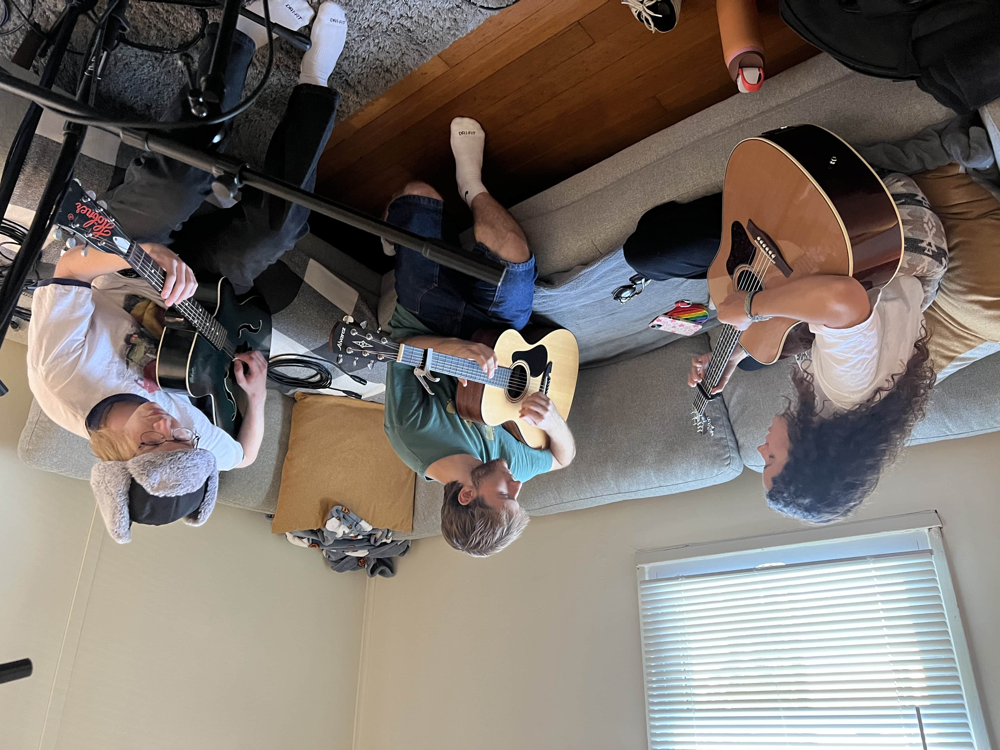
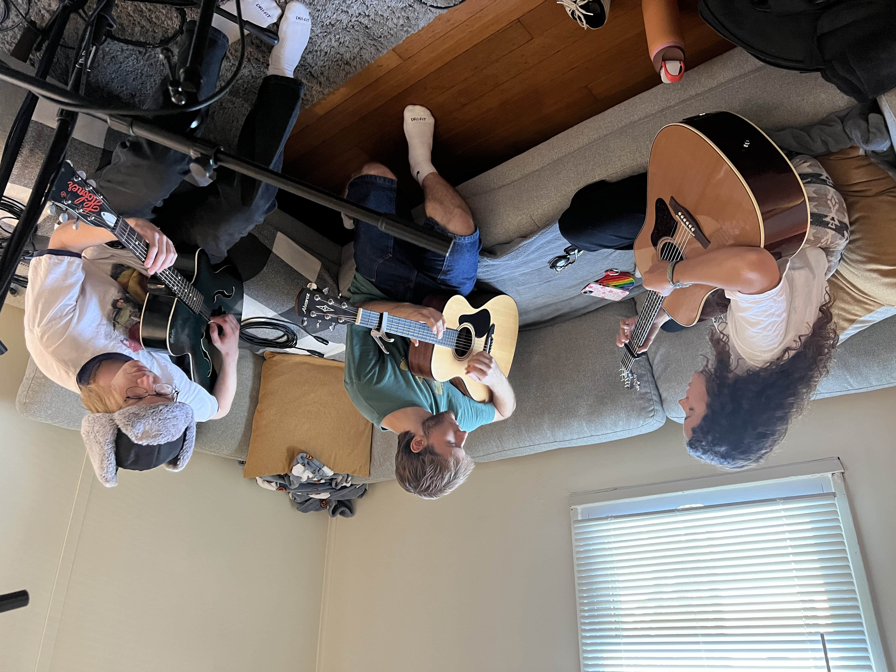

"June, July" is Just Penelope's debut single. Just Penelope is the Bloomington, Indiana-based indie grunge trio of Ella Curiel, Ethan Cantrell, and Drew Goforth. As of writing, Just Penelope is the latest signing to Fire Talk Records' imprint Angel Tapes. "The trio first connected at Indiana University’s cherished Jacobs School of Music, and quickly cut their teeth in the bubbling midwest scene. Well-studied in rock that moves the spirit and the body, Just Penelope have built a reputation in their finely-honed blend of indie, alternative country, and melodic shoegaze. Alongside the news of their signing, Just Penelope unveil their debut single, “June, July,” and their first-ever music video."

Keep Still is Dogwood's debut album. Dogwood is Ethan Cantrell and friends. Ethan is a musician, a writer, a producer, and an engineer. He draws on his relationships and daily life, writing songs with all kinds of expression, emotion, confessions, inventive rhythms, melodies, and harmony. Keep Still was recorded at my home, in the summer of 2024. Overdubs took place all over Bloomington, up to release on April 3, 2025.
Slug Rug is Slug Rug's third release, the first with their current lineup. Slug Rug is Audrey and Keegan Priest, Reeder Vyain, Ethan Cantrell, and Drew Goforth. This three-track EP spans the breadth of Slug Rug's stylings. "Lighter Fluid" is catchy and upbeat, "Oh Man" is sprawling and massive, and "Teenage Symphony" closes the EP with a full-bodied beat. Slug Rug was recorded at my home and at Ali's — a friend. Slug Rug was released on March 28, 2025.
What's Ahead is Behind Me is Prairie Scout's debut album. Prairie Scout started as the solo project of singer-songwriter Natalie Ingalls and grew to the current band composed of Julia Fegelman (bass), Wesley Davis (drums) and John Hasey (guitar). Influenced lyrically and sonically by folk-pop icon Vashti Bunyan, contemporaries like Wednesday and feeble little horse and the odd science fiction story, Prairie Scout puts their own spin on indie rock. What's Ahead is Behind Me was released on January 31, 2025.
Upanatem is Brick Lancaster's debut album. Brick Lancaster is Reeder Vyain, supported by me (bass, guitar), Ethan Cantrell (drums), Keegan Priest (guitar), and Ben Wilck (guitar, backing vocals). Reeder and I have been friends since elementary school, and we've worked together on music since high school. In college, we've made three albums, Upanatem is our latest. Reeder and I recorded Upanatem in the third bedroom and the living room of our house, in Bloomington, IN. We recorded to 1/2" 8-track, using 2 2500' reels as we had significant overdubs, and I wanted to archive various things along the way. Reeder and I think of the process as him coming to me with the riffs, an arrangement, and some lead lines, and I play the first thing that comes to mind. He and I are far enough along in producing together that we are able to be clear about what we don't like, and typically, there is little debate. Cut, add, modify, whatever needs to happen, then we move on. Upanatem was released on December 6, 2024.
Be Sincere is Billy Fortune's second EP. Billy Fortune is Nathan Reder, Lucas Vanderpool, Elliott Pippin, Blake Panstingel, Summer Feldt, and Sophia Troyer, based in Cincinnati. William "Billy" Fortune is a folk artist whose heartfelt storytelling and rich melodies capture the spirit of Midwestern life. I moved my studio, my Tascam mixer and TSR-8 8-track recorder, to Chicago's Picture-Minded Studios for a weekend in June 2024, and co-produced/engineered Billy's EP. Be Sincere was released on November 1, 2024.
Sam Roethgen is Sam Roethgen's debut self-titled album. I mastered this, after recording and mix engineer, and classmate in audio, Elliott Loewy asked me to. Elliott is a strong engineer, and Sam is a multi-talented musician. Sam Roethgen was released on April 25, 2025.


 
